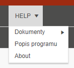
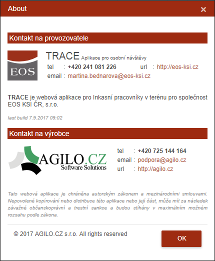

Menu HELP
V tomto menu - položka Dokumenty má uživatel k dispozici všechny dokumenty určené pro inspektory, které jsou průběžně přidávány a aktualizovány Supervizorem.

V položce Popis programu se spouští tento návod. K tomu může být přiřazen i Popis tablet.
v položce About, neboli O programu, jsou základní kontaktní údaje společnosti EOS a výrobce aplikace.
